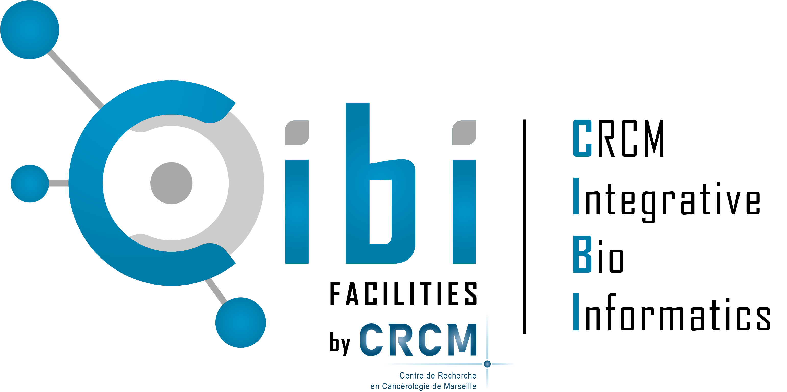
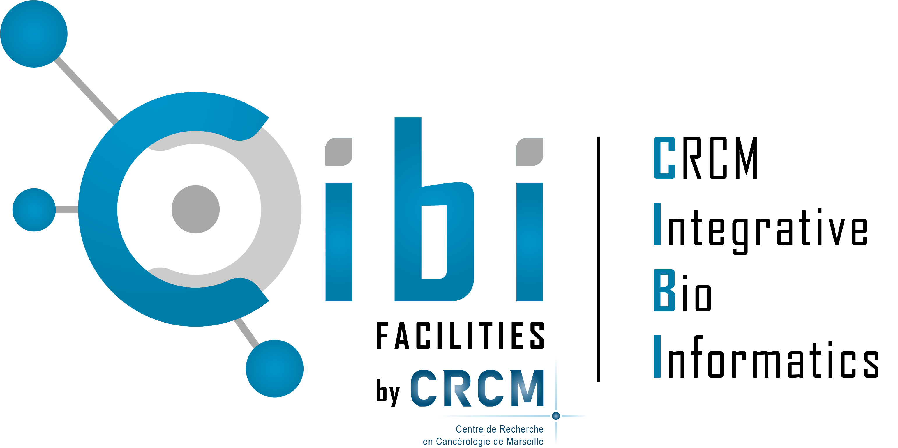

Ghislain BIDAUT, IR AMU, responsable de la Plateforme Bioinformatique Cibi du CRCM.

Novembre 2025
Ghislain BIDAUT, IR AMU, responsable de la Plateforme Bioinformatique Cibi du CRCM.

Savoir mener une analyse de données de single-cell RNA-seq sous R.
Dans l’environnement utilisé par les bioinformaticiens: à savoir Rstudio.
Travailler de manière participative pour se familiariser avec les technologies utilisées en bioinformatique pour le traitement de données NGS et communiquer plus efficacement avec les bioinformaticiens!
Lors de cette formation, nous mettrons l’accent sur les technologies open-source mises au point et utilisées dans le monde de la recherche.
Dans quel domaine travaillez vous ?
Quelle est votre expérience en analyse de données bioinformatique et RNA-seq ?
Qu’attendez vous de cette formation ?
Prendre en main les éléments du langage R nécessaires aux analyses NGS sous l’environnement RStudio. Chercher et installer les bibliothèques appropriées
Savoir automatiser ses analyses en écrivant des scripts R
Ouvrir les données et faire un contrôle qualité d’une analyse scRNA-seq
Prise en main de Seurat pour clusteriser des cellules
Intégrer plusieurs échantillons
Identifier les gènes Différentiellement exprimés
Comprendre la biologie des clusters obtenus par l’annotation
Mise à disposition de comptes de formation sur le cluster IFB-core de l’Institut Français de bioinformatique (IFB)
Les supports de cours à jour sont accessibles sur ce lien:
Connectez vous sur le cluster IFB par Ondemand: https://ondemand.cluster.france-bioinformatique.fr/pun/sys/dashboard/batch_connect/sessions
Après avoir entré vos identifiants, vous avez la possibilité d’ouvrir un type de sessions parmi les suivants:

Choisissez “Rstudio Server: Core”
Puis entrez les paramètres suivants:

L’écran suivant apparaît:

Cliquez “Connect to RStudio”.
Allez dans le répertoire /shared/projects/tp_2529_ngs_amu_181496
Créez vous un répertoire de travail (Exemple Mon_Nom) et positionnez vous dans ce répertoire.

Cette œuvre est mise à disposition selon les termes de la Licence Creative Commons:
Attribution - Pas d’Utilisation Commerciale - Pas de Modification 4.0 International (CC BY-NC-ND 4.0).